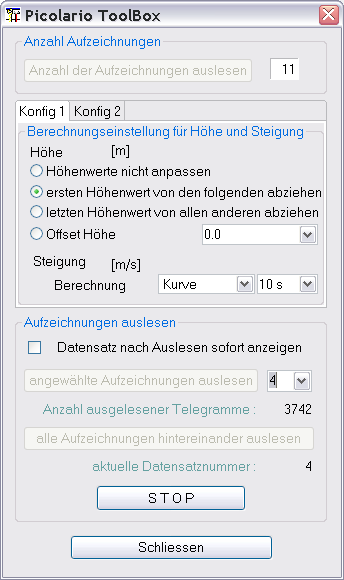
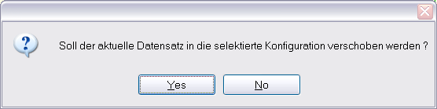

Der Picolario Gerätedialog dient zum Auslesen der im Gerät mitgeloggten Daten. Um die Datenanzeige zu beeinflussen, sind die zwei mittleren Dialogtabulatoren da. Hier kann jeder selbst in Abhängigkeit der vorliegenden Daten Konfigurationen auswählen. Zur Auswahl stehen
Höhenwerte nicht anpassen
ersten Höhenwert von den Restlichen abziehen (das ist der Normalfall)
letzten Höhenwert von den Restlichen abziehen (wenn der Datensatz zeitlich zu spät beginnt)
Höhenwerte um einen bestimmten Wert anpassen
Berechnungsart der Steigungskurve
Viele Felder sind mit Hilfetexten hinterlegt und sollten diese Beschreibung für den weiteren Gebrauch weitestgehend überflüssig machen. Die Texte werden durch den darüber gehaltenen Mauszeiger sichtbar.
Nachdem der serielle Schnittstelle über den Geräteauswahldialog eingestellt ist und der Gerätedialog aufgerufen ist kann durch drücken von „Anzahl der Aufzeichnungen auslesen“ die aktuelle Anzahl von Aufzeichnungen ausgelesen und angezeigt werden (Voraussetzung dazu ist natürlich, das der Picolario dazu vorbereitet wurde). Das Resultat ist beispielhaft in Bild 1 zu sehen.
Im zweiten Schritt kann nun im Vorfeld die auf die auszulesenden Daten anzuwendende Konfiguration verändert werden. Das kann aber auch nach dem Auslesen der Daten geschehen.
Als dritten Schritt besteht die Möglichkeit jeden Datensatz über „angewählte Aufzeichnung auslesen“ einzeln auszulesen. Je nachdem, wie viele Daten gespeichert sind kann das Auslesen einige Zeit in Anspruch nehmen. Deshalb empfiehlt sich fast immer den Weg über „alle Aufzeichnungen hintereinander auslesen“ zu nutzen. Hierbei wird dann, je nach Einstellung, immer wenn ein Datensatz vollständig ausgelesen ist, dieser sofort angezeigt. Ist der Gerätedialog nicht modal eingestellt kann man durch Selektion des Hauptfensters den Gerätedialog verbergen. Das Abholen der Daten passiert in einem separaten Thread dadurch wird die Anwendung selbst nicht beeinflusst.
Ein aktiver Dialog wird im Bild 2 gezeigt.

Wie schon in der Einleitung erwähnt können angezeigte
Daten durch Änderung der Konfigurationseinstellung angepasst
werden.
Möchte man die Höhenwerte um einen Betrag
verschieben und das Auswahl bietet nicht den gewünschten Wert
ist auch eine manuelle Eingabe des Wertes möglich.
Die
Steigungsberechnung kann über 2 verschiedene Regressionsarten
durchgeführt werden. Eine lineare Regression ergibt eine bessere
Glättung. Leider ergibt sich dadurch auch eine
Phasenverschiebung zur Höhenlinie. Diesen Nachteil umgeht man
mit der nicht linearen Regresssionsvariante, hier der Einfachheit
halber "Kurve" genannt.
Möchte man an einer
bestimmten Stelle die Steigung der Höhenlinie wissen besteht
auch die Möglichkeit diesen Wert über die Differenzmessung
zu ermitteln (Kurvenselektor -> Höhe -> Kontextmenü
-> Punktdifferenz messen).
Da vermutlich zwei Hauptvarianten
von Konfigurationen zum Tragen kommen gibt es auch zwei
Konfigurationstabulatoren, die eine jeweils unabhängige
Einstellung erlauben.
Möchte man nun dauerhaft, von einem
eingelesenen Datensatz als Beispiel den letzten Höhenwert von
der dargestellten Kurve abziehen, selektiert man einfach den
Tabulator und erhält die Möglichkeit den aktuellen
Datensatz in die Andere Konfiguration zu übertragen. Um die
Änderung zu bestätigen bekommt man eine Abfrage angezeigt.

Antwortet man positiv, wird der Datensatz übertragen und entsprechend aufbereitet.
Hinweis: bei jeder Veränderung der Konfigurationen wird unmittelbar eine Neuberechnung initiiert und die Picolario Konfigurationsdatei wird gesichert.